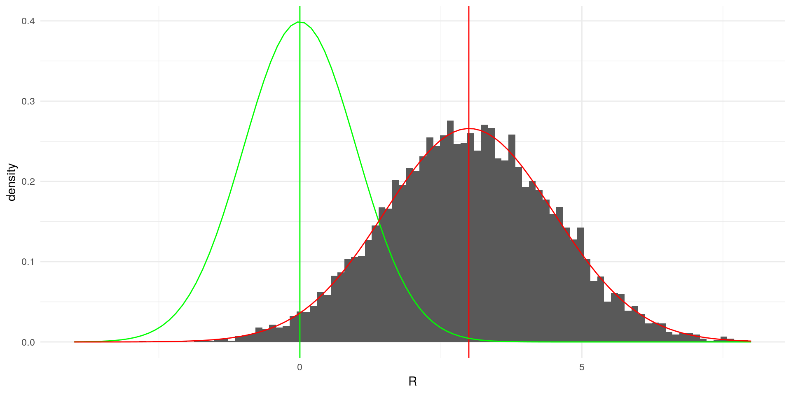

Features of Probability Distributions
1 Contents and Goals
- Get to know the basic features of probability distributions
- Mean / Expected Value
- Variance and Standard Deviation
- Covariance and Correlation
- Standardisation
- Learn how they work
- Learn how we can manipulate them
These features are the building blocks of statistics. Understanding how they work helps us to understand theoretical proofs.
They are useful to understand the concepts of (not exclusively) Estimation, Hypothesis Tests and Regression
2 Central Tendency: The Expected Value
The most commonly used feature of a probability distribution is the expected value. It splits the probability under the pdf in half.
\[ \mathbb{E}[X] = \sum x_i f(x) \]
The expected value is the value from a probability distribution, for which the probabilities of another value being greater or smaller than it are exactly equal.
For example, we simulate a random variable \(R\) from a standard normal distribution. First, we simulate the variable and draw a histogram with the arithmetic mean:
library(ggplot2)
set.seed(1337) #seed for reproducibility
data <- data.frame(R = rnorm(n = 1000000))
ggplot(data, aes(x = R)) +
geom_histogram(aes(y = ..density..), bins = 200) +
geom_vline(xintercept = mean(data$R), color="red") +
theme_minimal()It looks like the area to the left of the mean is the same size at the area on the right side. Let’s check that:
A <- numeric() # Variable for storing the area sizes
A[1] <- (sum (abs (data$R[data$R < mean(data$R)]))) /sum(abs(data$R)) # Area to the left of the mean in percent
A[2] <- (sum (abs (data$R[data$R > mean(data$R)]))) /sum(abs(data$R)) # Area to the right of the mean in percent
print(A)## [1] 0.5007953 0.4992047As we can see (and calculate), the area sizes are very similar, meaning that half of the probability mass is on each side of the mean. Notice that since we’re in a simulation context, the areas are not exactly the same.
2.1 Useful Rules for Expected Values
For any constants \(a\) and \(b\) and a random variable \(X\), the following rules apply:
- The expected value of a constant is the constant \[ \mathbb{E}[c] = c \]
The expected value of a linear function of a random variable is the linear function of the expected value of the variable \[ \mathbb{E}[aX+b] = a\mathbb{E}[X] + b\]
- The expected value of a sum of random variables is the sum of the expected values of these random variables: \[ \mathbb{E}\left[ \sum_{i=1}^n a_iX_i \right] = \sum_{i=1}^n \mathbb{E}[a_iX_i] = \sum_{i=1}^n a_i \mathbb{E}[X_i] \]
- For a variable \(Y\) that is independent of \(X\) it holds that: \[ \mathbb{E}[XY] = \mathbb{E}[X] \mathbb{E}[X] \]
The population mean is often denoted by \(\mu\) or \(\mu_X\) instead of \(\mathbb{E}[X]\)
3 Variability: Variance and Standard Deviation
The central tendendcy tells us, around which value the outcomes of the random variable cluster, but it is also important to get a measure on how far they spread around the mean. The variance and standard deviation are measures for this.
You can see this notion of distance from the mean in the definition of the variance:
\[ Var[X] = \mathbb{E} \left[ \left( X - \mu_X \right) ^2 \right] \]
The deviation from the expected value \((X - \mathbb{E}[X])\) is squared in order to prevent perfect cancellation of deviations, since: \[\mathbb{E} \left[(X - \mu_X) \right] = \mathbb{E}[X] - \mu_X = 0\]
3.1 Useful Rules for Variances
For any constants \(a\) and \(b\) and a random variable \(X\), the following rules apply:
- Alternative representation (see below for proof): \[ Var[X] = \mathbb{E} \left[ X^2 \right] - \mu_X^2 \]
- Variance of a constant is zero: \[ Var[c] = 0 \]
- Variance of a linear combination: \[ Var[aX+b] = a^2 Var[X] \]
- The population variance is often denoted by \(\sigma^2\) or \(\sigma_X^2\) instead of \(Var[X]\).
3.2 The Standard Deviation
If we change the unit of measurement of \(X\) by \(a = 1000\), e.g. from kilometers to meters, the variance increases linearly by \(a^2 = 1000 * 1000\) (see rules above). Since this makes it difficult to compare the variability of different variables, we use the standard deviation, which is the positive part of the square root of the variance:
\[ sd[X] = + \sqrt{Var[X]} \] For any constants \(a\) and \(b\) and a random variable \(X\), it has the following useful properties: - Standard deviation of a linear combination: \[ sd[a X + b] = |a| sd[X] \]
The variance of a sum of random variables is the sum of the evariance, given independence: \[ Var\left[ \sum_{i=1}^n X_i \right] = \sum_{i=1}^n Var[X_i] = \sum_{i=1}^n Var[X_i] \]
The standard deviation is often denoted by \(\sigma\) or \(\sigma_X\) instead of \(sd[X]\).
4 Standardisation of Variables
Using the properties of the expected value and variance, we can transform any variable to a standardised variable with mean 0 and standard deviation 1: \[ Z := \frac{X-\mu}{\sigma} \]
We can demonstrate this with a short simulation. In the following we simulate a random variable \(X\) from a normal distribution, that has mena \(3\) and standard deviation \(1.5\)
library(ggplot2)
set.seed(1337) #seed for reproducibility
data_st <- data.frame(R = rnorm(n = 10000, mean = 3, sd = 1.5))
ggplot(data_st, aes(x = R)) +
geom_histogram(aes(y=..density..),bins = 100) +
geom_vline(xintercept = mean(data_st$R), color="red") +
geom_vline(xintercept = 0, color="green") +
stat_function(fun = dnorm, color = "green", args = list(mean = 0, sd = 1))+
stat_function(fun = dnorm, color = "red", args = list(mean = 3, sd = 1.5)) +
xlim(c(-4,8)) +
theme_minimal()## Warning: Removed 3 rows containing non-finite values (stat_bin).## Warning: Removed 2 rows containing missing values (geom_bar).
The green lines indicate a standard normal distribution with \(\mu = 0\) and \(\sigma = 1\). Our simulated varaible clearly deviates from it. If we now transform \(X\) according to the formula above, the result yields:
data_st$Z <- (data_st$R - mean(data_st$R)) / sd(data_st$R)
ggplot(data_st, aes(x = Z)) +
geom_histogram(aes(y=..density..),bins = 100) +
geom_vline(xintercept = mean(data_st$R), color="red") +
geom_vline(xintercept = 0, color="green") +
stat_function(fun = dnorm, color = "green", args = list(mean = 0, sd = 1))+
stat_function(fun = dnorm, color = "red", args = list(mean = 3, sd = 1.5)) +
xlim(c(-4,8)) +
theme_minimal()
5 Association: Covariance and Correlation
The covariance captures the joint variation of two random variables. It allows us to get a sense of the relationship of them, e.g. \(X\) is always high when \(Y\) is. This can be visualised graphically:
library(ggplot2)
set.seed(1337)
data_cov <- data.frame(X = 1:1000 + rnorm(1000, sd = 100),
Y = 1:1000 + rnorm(1000, sd = 100))
ggplot(data_cov, aes(x = X, y = Y)) +
geom_point() +
geom_point(aes(x = mean(X), y = mean(Y)), color ="red") +
geom_vline(xintercept = mean(data_cov$X) + sd(data_cov$X), color = "red") +
geom_hline(yintercept = mean(data_cov$Y) + sd(data_cov$Y), color = "red")We can easily see that \(X\) and \(Y\) have a strong relationship. We can stat that: when the deviation of \(X\) (vertical line) from its mean (red dot) is high, the same can be said about the deviation of \(Y\) (horizontal line).
Expressing this relation of deviations from the mean mathematically yields us the formula of the covariance:
\[ Cov[X,Y] = \mathbb{E} \left[ (X - \mathbb{E}[X]) (Y - \mathbb{E}{Y} ) \right] \]
5.1 Useful Rules for Covariances
For any constants \(a\) and \(b\) and random variables \(X\), and \(Y\) the following rules apply:
Alternative representations (see below for proof): \[ \begin{aligned} Cov[X,Y] &= \mathbb{E}[XY] - \mathbb{E}[X] \mathbb{E}[Y] \\ &= \mathbb{E}[(X -\mathbb{E}[X])Y] \\ &= \mathbb{E}[X (Y -\mathbb{E}[Y])] \\ \end{aligned}\]
Covariance given independence of \(X\) and \(Y\): \[ \begin{aligned} Cov[X,Y] &= \mathbb{E}[XY] - \mathbb{E}[X] \mathbb{E}[Y] \\ &= 0 & \text{since } \mathbb{E}[XY] = \mathbb{E}[X] \mathbb{E}[X] \end{aligned}\]
Variance of linear combinations: \[ Cov[a_1 X + b_1, a_2Y + b_2] = a_1 a_2 Cov[X,Y]\]
The boundary of the covariance of two random variables (its most extreme value) is given by the product of their standard deviations. This is also called the Cauchy-Schwartz Inequality: \[ |Cov[X,Y]| \leq sd[X] sd[Y] \]
The population covariance is usually denoted by \(\sigma_{XY}\) instead of \(Cov[X,Y]\)
5.2 The Correlation Coefficient
The variance and standard deviation are both dependent on their units of measurement. To capture the pure relationsip betwee two random variables, we can get rid of this by using the Cauchy-Schwartz Inequality to normalise the variance. This yields us the correlation coefficient:
\[ Corr[X,Y] = \frac{Cov[X,Y]}{sd[X] sd[Y]} = \frac{\sigma_{XY}}{\sigma_X \sigma_Y}\]
- The population correlation coefficient is usually denoted as \(\rho\) or \(\rho_{XY}\) instead of \(Corr[X,Y]\)
6 Proofs
Proof for the alternative representation of the Variance
\[ \begin{aligned} Var[X] &= \mathbb{E} \left[ \left( X - \mu_X \right) ^2 \right] \\ &= \mathbb{E} \left[ X^2 - 2X\mu_X + \mu_X^2 \right] \\ &= \mathbb{E} \left[ X^2 \right] - \mathbb{E} \left[ 2X\mu_X \right] + \mathbb{E}\left[ \mu_X^2 \right] \\ &= \mathbb{E} \left[ X^2 \right] - 2 \mu_X \mu_X + \mu_X^2 \\ &= \mathbb{E} \left[ X^2 \right] - 2 \mu_X^2 + \mu_X^2 \\ &= \mathbb{E} \left[ X^2 \right] - \mu_X^2 \end{aligned}\]
Proof for the alternative representation of the covariance \[ \begin{aligned} Cov[X,Y] &= \mathbb{E} [ (X - \mu_X) (Y - \mu_Y) ] \\ &= \mathbb{E} [ XY - X \mu_Y - Y \mu_X + \mu_X \mu_Y ] \\ &= \mathbb{E} [ XY ] - \mathbb{E} [X \mu_Y] - \mathbb{E} [Y \mu_X] + \mathbb{E}[\mu_X \mu_Y] \\ &= \mathbb{E} [ XY ] - \mu_Y \mathbb{E}[X] - \mu_X \mathbb{E}[Y] + \mu_X \mu_Y \\ &= \mathbb{E} [ XY ] - \mu_Y \mu_X - \mu_X \mu_Y + \mu_X \mu_Y \\ &= \mathbb{E} [ XY ] - \mu_X \mu_Y \end{aligned}\]
Proof for the second alternative representation of the covariance \[ \begin{aligned} Cov[X,Y] &= \mathbb{E}[XY] -\mu_X \mu_Y \\ &= \mathbb{E}[XY] - \mu_X\mathbb{E}[Y] \\ &= \mathbb{E}[XY] - \mathbb{E}[\mu_XY] \\ &= \mathbb{E}[ XY - \mu_X Y] \\ &= \mathbb{E} [(X - \mu_X) Y] \end{aligned} \]